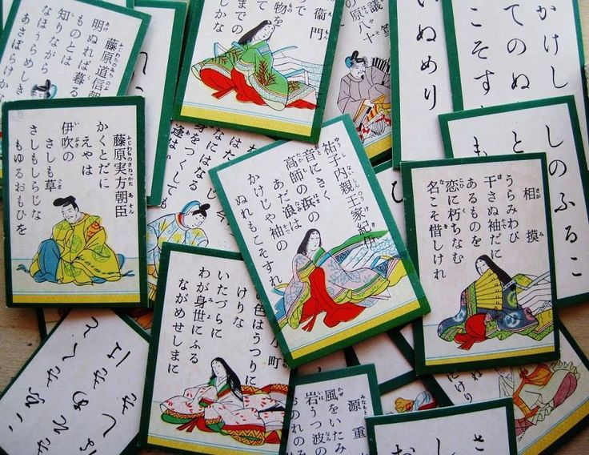
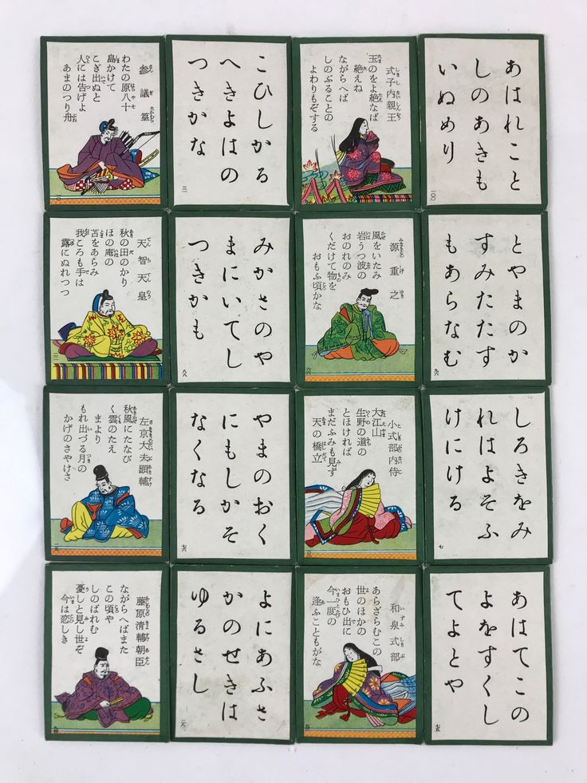
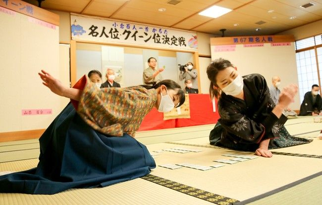

This website is a project by student Abdulrahman Ahmed Sayed Bakhit for Sprix; it is a webpage where you can learn the Japanese game of Karuta.
MY Personal Page

Karuta is a traditional Japanese card game. It is based on the famous collection of one hundred poems called Hyakunin Isshu. In the game, one player reads the first part of a poem aloud. The other players must quickly find the matching card with the second part of the poem. The fastest player takes the card. Karuta is not only a game but also a way to learn Japanese language, history, and poetry. Players need a good memory, quick thinking, and fast hands to win. Today, Karuta is popular in Japan, and many students and adults enjoy playing it in schools and competitions. It is a fun and exciting game that combines culture, literature, and sport.

Yes, Karuta is a very useful game. It is not only a fun game but also a great way to learn Japanese culture and language. Karuta helps players improve their memory because they must remember one hundred poems and quickly recognize them during the game. It also improves concentration, listening skills, and reaction speed. In addition, Karuta introduces players to traditional Japanese poetry and history. Many students in Japan play Karuta to learn about their country's culture while enjoying a competitive game. In conclusion, Karuta is more than just a card game. It is an educational activity that develops memory, language skills, and quick thinking, making it both enjoyable and beneficial.